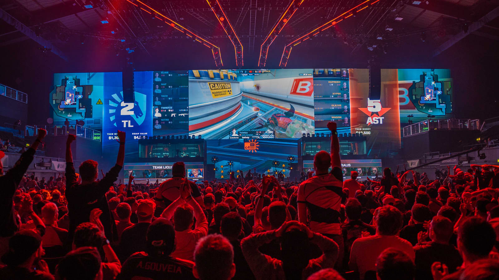

eSports, short for electronic sports, traces its roots back to the early days of video gaming
competitions. While the concept of competitive gaming dates back to arcade tournaments of the 1970s
and 1980s, the modern eSports scene began to take shape in the late 1990s and early 2000s with the
rise of games like Quake, StarCraft, and Counter-Strike. Over the years,
eSports has grown into a global phenomenon, with professional leagues, tournaments, and massive
prize pools.
Evolution
The evolution of eSports has been marked by technological advancements and changing gaming trends.
From LAN parties to online multiplayer competitions, eSports has adapted to new platforms and
gaming formats, reaching a wider audience than ever before. Today, eSports events attract millions
of viewers worldwide, with live streaming platforms like Twitch and YouTube Gaming playing a
pivotal role in the industry's growth.
Team playing at competition
eSports Games
Key Titles
A wide variety of video games are played competitively in the eSports circuit. These include popular
titles such as League of Legends, Counter-Strike: Global Offensive (CS:GO),
Dota 2, Fortnite, Overwatch, Call of Duty, and Rocket
League, among others. Each game has its own dedicated community of players and fans, with
professional leagues and tournaments organized around them.
Emerging Trends
As the eSports industry continues to evolve, new games and genres are emerging as contenders in the
competitive gaming scene. Games like Valorant, Apex Legends, and Genshin
Impact have gained popularity among players and spectators alike, offering fresh gameplay
experiences and innovative mechanics.
Top Teams
Some of the most renowned eSports teams have achieved legendary status within the gaming community.
Teams like Fnatic, Team Liquid, SK Telecom T1 (now known as T1), Evil Geniuses, and FaZe Clan have
dominated various eSports titles and amassed a massive following of fans worldwide.
Rivalries
Intense rivalries often develop between top eSports teams, adding excitement and drama to
competitions. Matches between long-standing rivals like Fnatic and G2 Esports or T1 and KT Rolster
draw large audiences and showcase the competitive spirit of eSports. These rivalries contribute to
the rich history and tradition of competitive gaming.
Impact of eSports
Social and Economic Impact
eSports has had a profound impact on gaming culture and communities around the world. It has not only
elevated video gaming to the status of a legitimate sport but has also created opportunities for
professional gamers, content creators, event organizers, and sponsors. eSports events attract
millions of viewers online and in-person, fostering a sense of camaraderie among fans and driving
innovation within the gaming industry.
Health and Wellness
While eSports offers exciting opportunities, it also raises concerns about the sedentary lifestyle
associated with prolonged gaming sessions. To address these concerns, initiatives promoting
well-being among gamers have emerged, emphasizing the importance of physical activity, mental
health awareness, and balanced screen time.

Esports crowd watching and cheering during competition